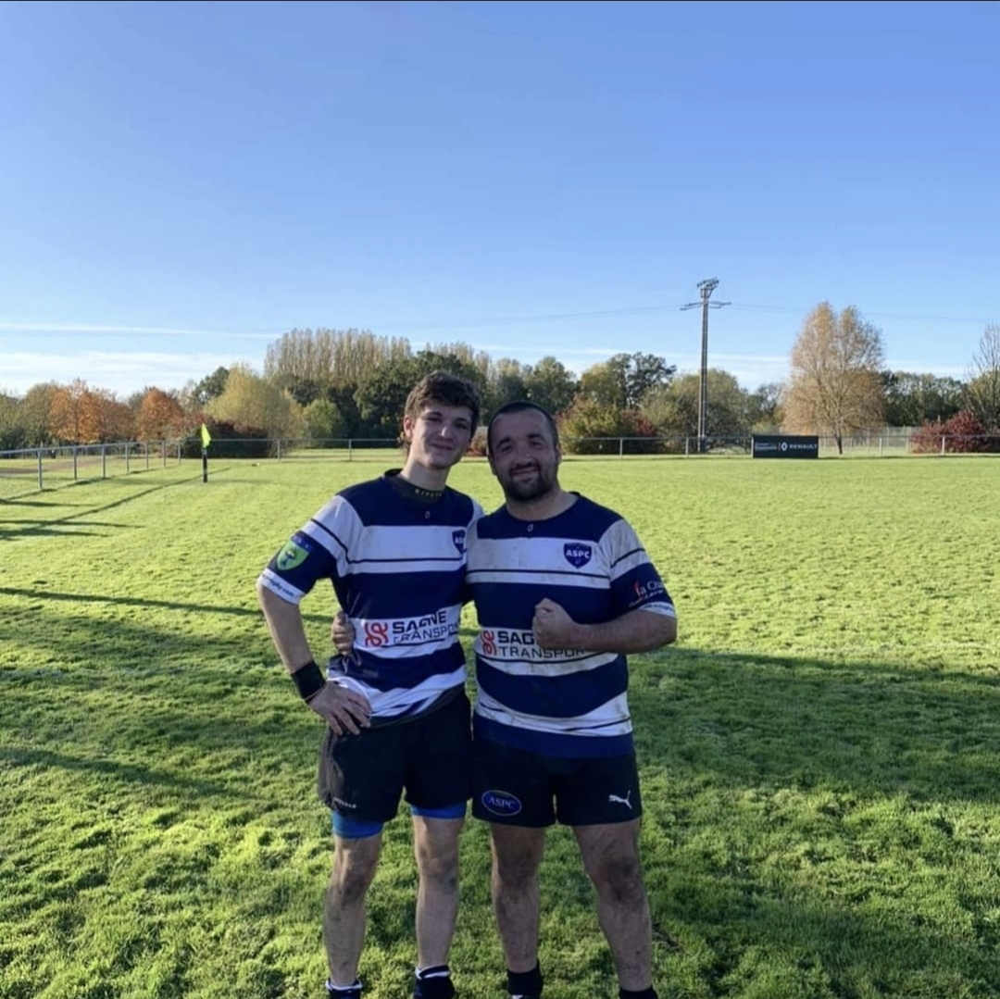
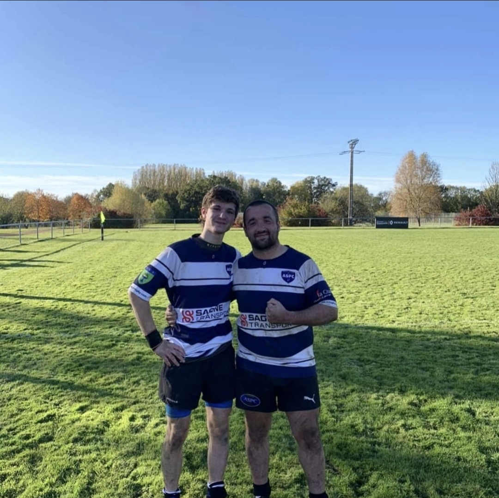
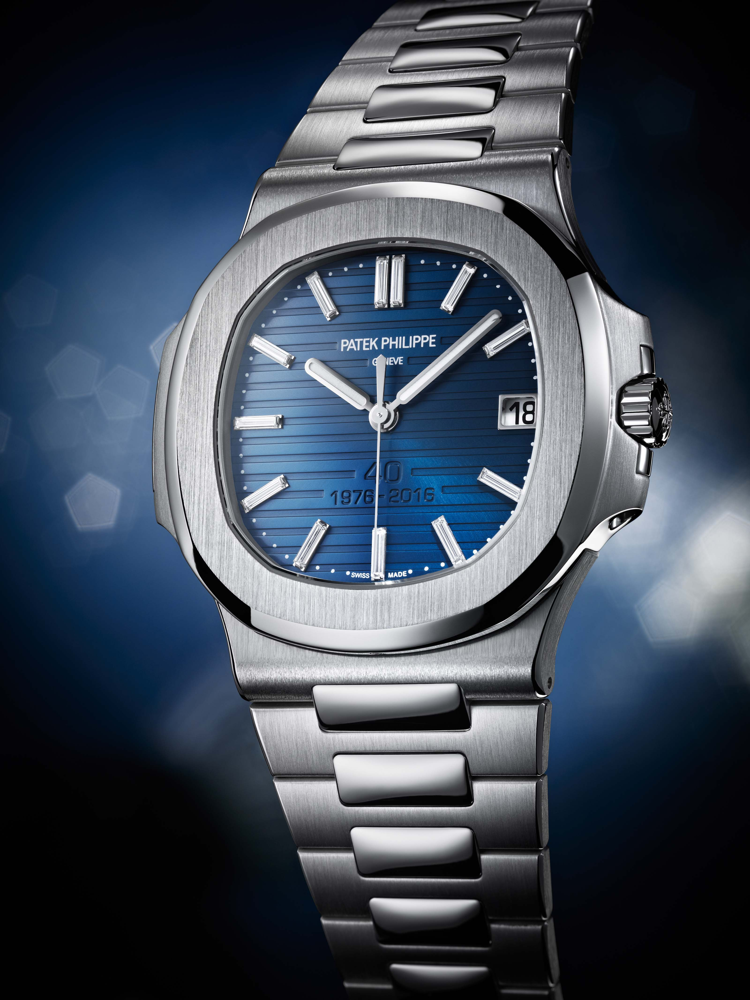
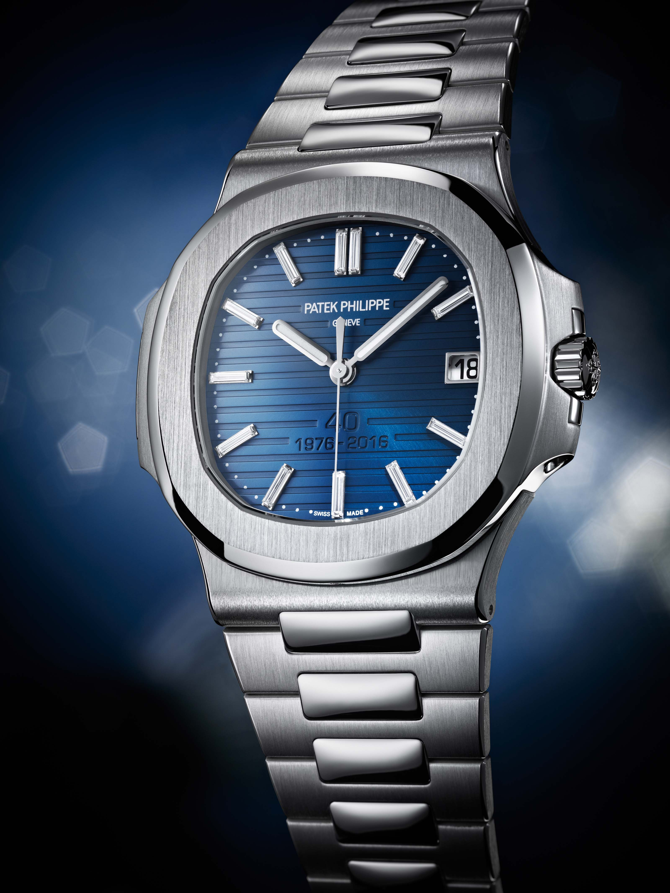
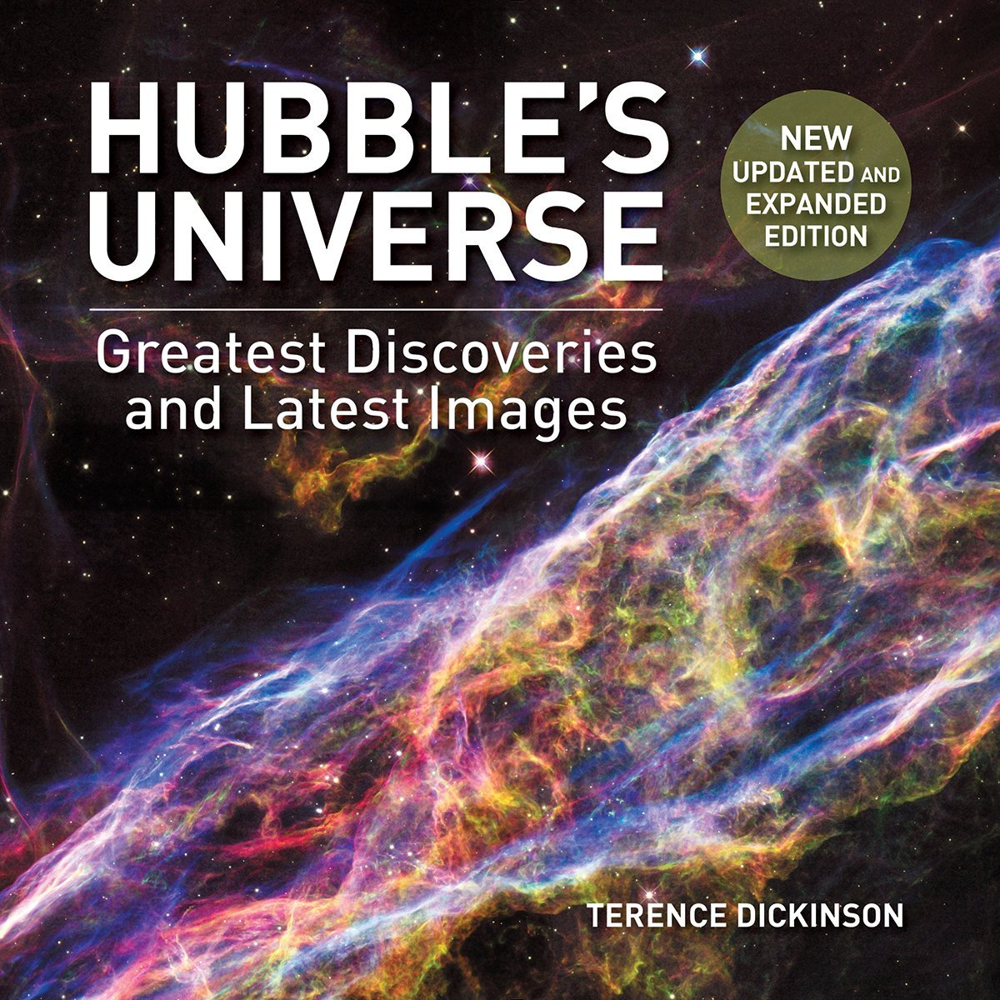

Mes loisirs
Rugby/Musculation
 
J'ai une réelle passion pour le rugby, j'en fais depuis environ quatre ans et j'aime surtout les valeurs
partagées dans ce sport. J'en fais les week-end lorsque j'ai le temps de rentrer car mes matchs sont en Bourgogne.
Comme dit dans mon CV, j'aime passer du temps avec mon équipe ou avec les seniors et faire du bénévolat.
J'aime également la musculation que j'ai commencé depuis moins longtemps mais qui me permets de faire du sport
une fois par semaine en ayant une salle de sport à Roanne. En réalité, j'aime le sport en général (athlétisme, foot, volley etc...)

J'ai une réelle passion pour le rugby, j'en fais depuis environ quatre ans et j'aime surtout les valeurs
partagées dans ce sport. J'en fais les week-end lorsque j'ai le temps de rentrer car mes matchs sont en Bourgogne.
Comme dit dans mon CV, j'aime passer du temps avec mon équipe ou avec les seniors et faire du bénévolat.
J'aime également la musculation que j'ai commencé depuis moins longtemps mais qui me permets de faire du sport
une fois par semaine en ayant une salle de sport à Roanne. En réalité, j'aime le sport en général (athlétisme, foot, volley etc...)
Cybersécurité/Thriller

 J'aime également lire des ouvrages sur la cybersécurité pour me documenter et apprendre toutes sortes de choses
en lien avec ça, que ce soit l'informatique, les personnes importantes qui ont contribué à l'amélioration de ce domaine
ou le réseau etc... J'aime aussi lire des thrillers en dehors des cours, dans le train par exemple ou le soir
pour me détendre et faire autre chose que les cours et le sport.
J'aime également lire des ouvrages sur la cybersécurité pour me documenter et apprendre toutes sortes de choses
en lien avec ça, que ce soit l'informatique, les personnes importantes qui ont contribué à l'amélioration de ce domaine
ou le réseau etc... J'aime aussi lire des thrillers en dehors des cours, dans le train par exemple ou le soir
pour me détendre et faire autre chose que les cours et le sport.
Montres
 

Les montres et le domaine de l'horlogerie m'intéressent également beaucoup. Je possède quelques montres dont je fais
la collection même si celles présentées juste au dessus sont bien plus chères et rares que les miennes.
Les mécanismes visibles sont, je trouve, magnifiques à regarder et j'admire les personnes qui construisent ce mecanisme
de A à Z minutieusement.
L'univers


L'univers qui nous entoure, les planètes, les galaxies sont des choses qui me passionnent. Je lis quelques
ouvrages sur ça, sur les distances qui nous séparent de telle ou telle étoile, les différentes photographies
que nous avons ou encore les mystères irrésolus. Ici j'ai mis comme photos la galaxie d'Andromède ainsi que
le livre Hubbles, qui est une référence directe au téléscope spatial de la NASA, excellent livre au passage avec
de magnifiques images.